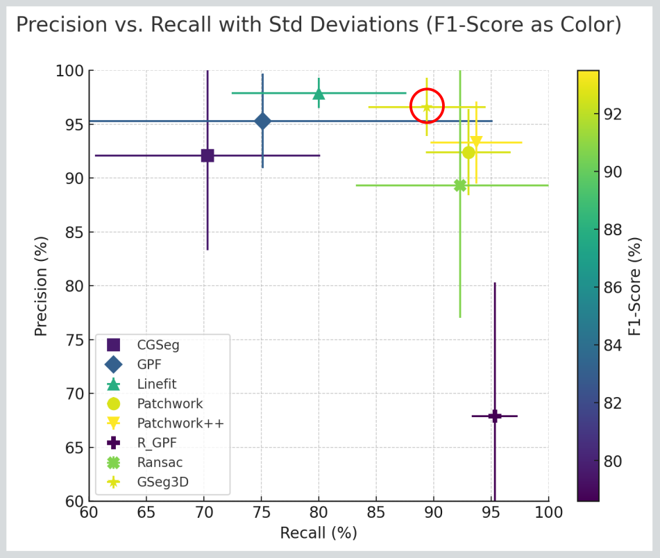

GSeg3D
High-Precision Grid-Based Ground Segmentation for Safety-Critical Autonomous Driving and Robotics Applications
This module implements the core algorithmic components of GSeg3D, a high-precision, grid-based ground segmentation method for LiDAR point clouds designed for safety-critical autonomous driving and robotics applications.

If you use this work, please cite:
Please find below a summary comparison of the average results on the SemanticKITTI sequences 00–10:

Motivation
Reliable ground segmentation is a fundamental prerequisite for:
- Obstacle detection
- Traversability estimation
- Navigation and planning
- Mapping and localization
False positives (classifying ground as obstacles) can directly compromise safety and downstream decision-making.
GSeg3D is explicitly designed to maximize precision while maintaining robust recall, even in cluttered and unstructured environments.
Algorithm Overview
GSeg3D paper performs two-phase grid-based ground segmentation. For a reference implementation of the two-phase approach, see the ROS 2 node available here.
<a href="https://github.com/dfki-ric/ground_segmentation_ros2/blob/c370b2be20c75dc9fb9e6710f933ab1328fa0981/src/ground_segmentation_ros2_node.cpp#L84C8-L84C29" >Phase I – Coarse Segmentation</a>
- Uses larger vertical grid cells
- Aggressively captures elevated structures as non-ground
- Ensures high initial precision
- May temporarily over-segment ground in cluttered areas
<a href="https://github.com/dfki-ric/ground_segmentation_ros2/blob/c370b2be20c75dc9fb9e6710f933ab1328fa0981/src/ground_segmentation_ros2_node.cpp#L91C8-L91C30" >Phase II – Refinement</a>
- Uses smaller vertical grid cells
- Re-evaluates ground points from Phase I
- Corrects false positives and false negatives from Phase I
- Enforces vertical consistency constraints
This dual-phase strategy strikes a strong balance between precision and recall, a trade-off that is especially important in safety-critical systems.
Processing Pipeline
Each phase follows the same four core steps:
- Grid Representation
- The point cloud is discretized into a regular 3D grid
- Each point is assigned to a cell based on configurable cell sizes
- Local Eigen Classification
- Per-cell covariance matrix and eigen decomposition
- Cells classified as:
LINE(dominant linear structure)PLANE(surface-like structure)NOISE(scattered points)
- Surface Gradient Analysis
- Robust plane fitting using PCL SACSegmentation (PROSAC)
- Slope estimation relative to gravity (world frame)
- Planar cells exceeding slope thresholds are rejected as ground
- Ground Region Expansion
- Candidate ground cell centroids are indexed using a KD-tree (nanoflann)
- Radius-based neighborhood expansion ensures connectivity
- Works even when grid resolution is finer than LiDAR scan-line spacing
- Phase II additionally enforces height-difference constraints
Key Design Contributions
KD-Tree–Based Ground Expansion
Traditional grid-neighbor expansion fails at high grid resolutions due to scan-line gaps.
GSeg3D overcomes this by:
- Indexing ground centroids in a KD-tree
- Performing radius-based spatial expansion
- Enabling fine grid resolutions without loss of connectivity or recall
Robust Seed Initialization
- Synthetic seed points are injected directly beneath the robot
- Ensures reliable ground initialization even with occlusions or sparse data
- Synthetic points are removed before final output and evaluation
Multi-Step Ground Verification
Each candidate cell undergoes:
- Plane inlier / outlier separation
- Bounding-box sparsity analysis
- Neighborhood height consistency checks
- Floating-cell rejection (non-ground below)
Only physically plausible and spatially coherent cells are labeled as ground.
Implementation Details
To generate the HTML documentation for this library:
System Requirements
OS: Ubuntu 22.04, Ubuntu 24.04
Dependencies
- CMake
- PCL
- Eigen3
- GoogleTest
- NanoFlann
Example (Ubuntu):
Build Instructions
Generating Documentation
- Make sure you have Doxygen and Graphviz installed:
- From the root of the project, run CMake and build the
doctarget:
- After building, open the generated HTML documentation
doc/html/index.htmlin your browser
The main page will include the README and automatically list the header files and classes.
Running Unit Tests
or
Core Class
Main API
Typical Configuration
Below is a recommended baseline setup for most outdoor mobile robotics use cases (e.g., LiDAR-based UGVs). Adjust values based on sensor height, terrain roughness, and map resolution.
Phase-I
Phase-II
After coarse ground detection of Phase-I, Phase II increases vertical resolution to refine classification. All parameters are kept same as Phase-I expect for the cellSizeZ
Performance Summary (SemanticKITTI)
- Precision: ~96–99% (low variance)
- Recall: ~85–91%
- F1-score: ~92–94%
- Runtime: ~48 ms (CPU, single scan average)
GSeg3D consistently demonstrates stable, high-precision performance across:
- Urban environments
- Highways
- Unstructured terrain
Intended Use
- Safety-critical autonomous driving
- Outdoor mobile robotics
- Traversability analysis
- Mapping and perception pipelines
Notes & Future Work
- Recall degradation in dense vegetation remains challenging
- Planned extensions:
- Semantic-aware refinement
- Temporal fusion
- GPU acceleration
Tests & Visualisation
This directory contains unit tests and a visual debugging tool for the PointCloudGrid ground segmentation implementation.
The code uses PCL, Eigen, and GoogleTest and is intended for quick validation of grid indexing, ground classification logic, and phase-based segmentation behaviour.
Contents
test_pointcloud_grid.cpp
GoogleTest-based unit tests covering:- Grid indexing and hashing
- Flat ground detection
- Vertical structures as obstacles
- Phase 1 vs Phase 2 behaviour
- Orientation / gravity influence
- Robustness against empty inputs
test_visual_segmentation.cpp
A visual inspection tool that:- Loads a
.pcdor.plypoint cloud - Runs phase 1 + phase 2 ground segmentation
- Displays ground (green) and obstacles (red) using PCLVisualizer
- Loads a
Notes
- Phase 1 allows vertical and slanted propagation from the robot seed cell.
- Phase 2 refines ground classification using only previously detected ground.
- Orientation (
Eigen::Quaterniond) is interpreted as sensor → world rotation.
License
BSD-3 Clause License.
© DFKI Robotics Innovation Center